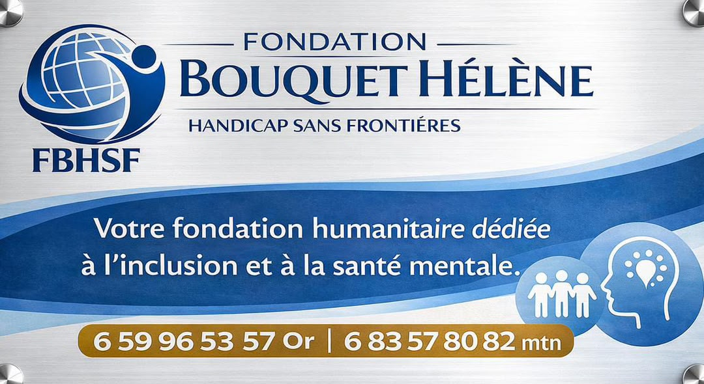

Inclusion
Favoriser l’intégration sociale, scolaire et professionnelle des personnes handicapées.
La Fondation Bouquet Hélène – Handicap Sans Frontières accompagne les personnes en situation de handicap et leurs familles, pour que chacun trouve sa place dans la société.
Soutenir la fondation Découvrir notre mission
Éducation, santé, vie sociale : trop de personnes en situation de handicap restent à l’écart. La fondation agit pour lever ces barrières, en pleine collaboration avec les familles et les communautés.
Nous plaçons aussi la santé mentale au cœur de notre action : écouter, informer et orienter, sans jugement.
Favoriser l’intégration sociale, scolaire et professionnelle des personnes handicapées.
Sensibiliser, écouter et orienter les personnes en détresse psychologique.
Soutenir les proches et renforcer leurs capacités au quotidien.
Combattre les préjugés et la stigmatisation par l’information.
Quelques moments forts de nos actions sur le terrain.
Chaque contribution finance l’accompagnement et les campagnes de sensibilisation.
Nous écrire pour donnerInstitutions et entreprises : construisons ensemble des projets inclusifs.
Proposer un partenariat